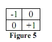

Torna alla pagina di Elaborazione delle Immagini
:: Appello d'esame di Elaborazione delle Immagini - 12/06/2006 ::
Esercizio 1
Guardando l’immagine mostrata in Figure 1:
- Di che tipo di rumore si tratta
- Descrivere matematicamente la densità di probabilità relativa al rumore considerato.
- Indicare un possibile filtraggio per ridurre il rumore della figura.
SOLUZIONE
1- si tratta sicuramente di rumore Sale e Pepe, infatti nell'immagine si possono notare i puntini neri sullo sfondo grigio chiaro e i puntini bianchi sulle monete.
La definizione corretta del rumore Sale e Pepe è Rumore a Impulsi Bipolare, ma viene chiamato sale e pepe per via della somiglianza con i granuli sale-e-pepe che sono distribuiti casualmente nell'immagine.
Solitamente il rumore ad impulsi è presente quando si verificano transizioni veloci durante il processo di imaging.
2- la densità di probabilità(PDF) di questo tipo di rumore è data da:
p(z) = {
Pa per z=a
Pb per z=b
0
}
Quindi se b>a apparirà come un punto chiaro nell'immagine, mentre se a>b allora comparirà come un punto scuro. Nel caso in cui Pa o Pb sono nulli allora il rumore viene definito Unipolare, cioè o solo Sale o solo Pepe per via della presenza di soli puntini bianchi o soli puntini neri.
I puntini bianchi e neri sono puri, quindi avranno il valore di intensità minore (0 nero) e maggiore (255 bianco) dell'immagine(non saranno gli unici pixel ad avere valore minore o maggiore, dipende da che tipo di immagine abbiamo), quindi nell'istogramma alle estremità avremo o dei picchi o comunque dei valori aggiuntivi (dipende sempre dal tipo di immagine che abbiamo); in questo caso ad esempio avremo sicuramente un picco sullo 0 per via della presenza dei puntini neri e del fatto che l'immagine è soprattutto in grigio e non ha pixel neri al di fuori del rumore presente.
3- solitamente il filtro più efficace con il rumore Sale e Pepe è il filtro mediano, che nel caso di rumori casuali è più efficace rispetto ai filtri di smoothing perché sfoca di meno. Questo filtro è efficace sia col rumore Bipolare che Unipolare.
Il filtro mediano sostituisce il valore di un pixel con il mediano dei livelli di intensità nel suo intorno.
Esercizio 2
Data l’immagine rappresentata in Figure 2, calcolarne:
- l’istogramma
- la probabilità dei livelli di grigio
- l’entropia di primo ordine e quella di secondo ordine
SOLUZIONE
1- 8 livelli di 1, 4 livelli di 5, 4 livelli di 4.
L'istogramma ovviamente approssimativo dell'immagine è:
Ricordiamo che l'istogramma di un'immagine digitale con livelli di intensità nella gamma [0, L-1] è una funzione discreta h(rk)=nk dove rk è il valore d'intensità k-esimo ed nk è il numero di pixel dell'immagine con intensità rk.
2- La probabilità dei livelli di intensità è: p(rk)=nk/MN dove M e N sono le dimensioni dell'immagine.
Nel nostro caso avremo che:
l'immagine la consideriamo come una 4X4 e quindi
p(1) = 8/16 = 1/2
p(4) = 4/16 = 1/4
p(5) = 4/16 = 1/4
3- L'entropia è l'informazione media della sorgente di intensità immaginaria in bit, detto in parole umane la quantità media di informazione presa dalla sorgente.
Il rapporto tra l'entropia e la quantità di informazione visiva è tutt'altro che intuitivo. Cioè ci possono essere delle immagini che sembrano avere pochissima informazione visiva, ma allo stesso tempo avere un'alta entropia.
L'entropia di primo ordine si calcola tramite la seguente formula:

dove pr è la probabilità dell'occorrenza del livello di intensità rk in una immagine.
Quindi nel nostro caso avremo:
- [0.5 * log2 0.5 + 0.25 * log2 0.25 + 0.25 * log2 0.25] =
- [0.5 * -1 + 0.25 * (-2) + 0.25 * (-2)] =
1.5 bit/pixel
WARNING
Manca l'entropia di secondo ordine
Esercizio 3
Data una immagine il cui spettro di Fourier è rappresentato in Figura 3. Determinare la minima frequenza di campionamento orizzontale e verticale al fin di evitare aliasing (sovrapposizione delle repliche spettrali).
SOLUZIONE
fmax,x = 100Hz implica avere una densità di campioni su x pari a 200 campioni per unità di lunghezza.
fmax,y = 300Hz implica avere una densità di campioni su y pari a 600 campioni per unità di lunghezza.
L'aliasing o aliasing della frequenza è un processo in cui le componenti ad alta frequenza di una funzione continua, si mascherano alle frequenze più basse nella funzione campionata. Quando è presente aliasing l'antitrasformata di Fourier introduce degli errori perché si verifica una sovrapposizione dei periodi che non permette di isolare un singolo periodo della trasformata, tutto ciò avviene perché c'è un abbassamento del tasso di campionamento sotto quello di Nyquist. La frequenza di Nyquist equivale esattamente al doppio della frequenza più alta, infatti nell'esercizio abbiamo il valore doppio rispetto alla frequenza indicata.
Esercizio 5
Data l’immagine della Figure 4:
- Filtrarla con il filtro rappresentato nella Figure 5.
- Di che filtro si tratta?
- Cosa si ottiene filtrando l’immagine?

SOLUZIONE
1- Prima di tutto bisogna effettuare uno zero padding di dimensioni m-1 e n-1 dove m e n sono le dimensioni del filtro, in questo caso quindi dobbiamo aggiungere una riga e una colonna di zeri:
0 0 0 0 0
0 1 4 4 1
0 1 5 5 1
0 1 5 5 1
0 1 4 4 1
Il risultato del filtraggio è:
1 4 4 1
1 4 1 -3
1 4 0 -4
1 3 -1 -4
questo risultato si ottiene facendo scorrere il filtro sull'immagine iniziale da sinistra verso destra, dall'alto verso il basso. Ad ogni passaggio bisogna moltiplicare i valori del filtro per i sottostanti valori dell'immagine, sommare il risultato delle moltiplicazioni (in questo caso sempre 4 avendo un filtro 2X2) ed il risultato della somma inserirlo nel pixel in basso a destra.
NOTA: si ricorda che nelle immagini digitali l'origine parte da in alto a sinistra, quindi seguendo questa convenzione:
2- E' il filtro 2X2 di Roberts, chiamato più precisamente operatore gradiente di Roberts
3- questo tipo di maschere vengono utilizzate per calcolare il Gradiente, quindi effettuare uno sharpening (non lineare) delle immagini tramite le derivate del primo ordine. Lo sharpening in generale serve per mettere in evidenza gli edge e le discontinuità (come il rumore) nelle immagini, mentre mette in secondo piano le zone ad intensità costante o poco variabile.
Il gradiente di f alle coordinate (x,y) è definito come un vettore colonna bidimensionale ed ha l'importante proprietà geometrica di puntare verso la direzione dove è concentrata la più alta percentuale di variazione di f rispetto al punto (x,y).
Gli operatori gradiente di Roberts, o comunque le maschere di dimensione pari, sono scomode da usare perché non hanno un centro di simmetria; in tutte le maschere di questo tipo la somma dei coefficienti deve essere 0, perché il nostro scopo(come indicato prima) è che queste maschere restituiscano 0 nelle zone ad intensità costante.
Esercizio 6
Commentare il diagramma di Figura 6, indicare di che tipo di diagramma si tratta, le informazioni che esso contiene.
SOLUZIONE
Il diagramma mostrato in figura è il diagramma di Gamut.
La figura curva più esterna mostra la composizione del colore come funzione di x(rosso) e y(verde). Per ogni valore di x e y, il corrispondente valore di z(blu) si ottiene dall'equazione z=1-(x+y).
Il triangolo in dettaglio mostra una tipica gamma di colori, chiamata gamut dei colori, prodotta dai monitor RGB.
In generale se un triangolo interno ha i vertici sui tre colori primari fissi RGB: rosso, verde, blu ogni colore all'interno del triangolo o sul bordo è ottenibile da una combinazione dei tre colori iniziali. Da ciò comprendiamo che con i tre colori primari fissi non si può ottenere tutta la gamma di colori presente nel diagramma di cromaticità.
La regione irregolare all'interno del triangolo è rappresentativa della serie di colori dei dispositivi di stampa a colori ad alta qualità. Il bordo del range di stampa a colori è irregolare perché la stampa a colori utilizza una combinazione di miscelazioni additive e sottrattive di colori.
Torna alla pagina di Elaborazione delle Immagini